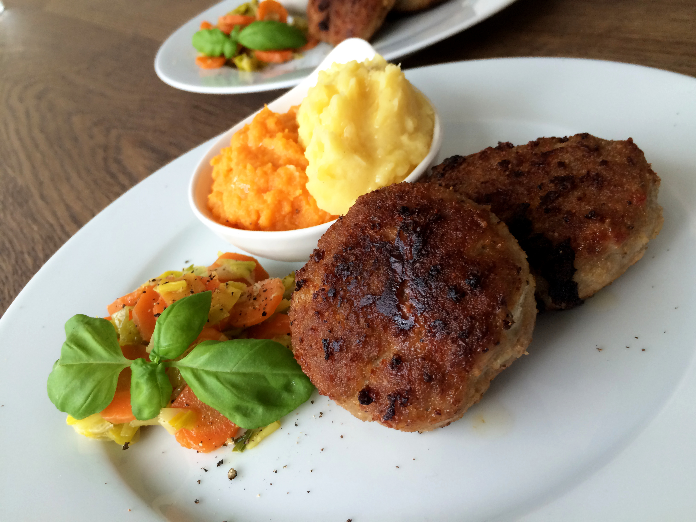

Mince Meat balls

Description
Meat balls are available all around the world, this is a recipe for the austrian version of meat balls.
Ingredients
- 1kg mixed minced meat
- old bread rolls
- 2 eggs
- Salt
- Black pepper
- Onions
Steps
- Cut the old bread rolls in pieces adn put them in water to get them soaked
- Cook the onions until they are glzing
- Mix the bread, onions and spices with the minced meat
- Form roughly hand size balls from this mass
- Cook them in a pan with oil
- Enjoy!
Home